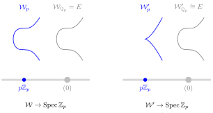

Chapter 6Elliptic curves over local fields
This chapter follows [Sil09, Chapter VII]. For the reduction types we also follow [Poo08, Section 6] and [Mil20, Section II.3]; Silverman's Section VII.4 is merged here with its converse, Section VII.7.
A number field is a finite extension of \(\Q\). A global function field is a finite extension of \(\F_p(t)\) for some prime \(p\) or, equivalently, it is the function field \(k(C)\) of a geometrically integral curve \(C\) defined over a finite field \(\F_q\). We say that \(k\) is a global field if it is either a number field or a global function field.
For \(k\) a global field, we let \(\Omega_k\) denote the set of places of \(k\): equivalence classes of non-trivial absolute values on \(k\). For \(v \in \Omega_k\), we denote by \(k_v\) the completion of \(k\) at \(v\). A local field is the completion of a global field at a place.
Remark 6.0.1. A place \(v\) need not come from a discrete valuation.
- If \(k\) is a number field, the archimedean places correspond to the real embeddings and the pairs of complex conjugate embeddings of \(k\), and for them \(k_v\) is \(\R\) or \(\C\). There \(v\) is an absolute value but not a valuation, and \(k_v\) has no ring of integers in the sense below.
- The non-archimedean places of a number field correspond to the non-zero prime ideals \(\pp\) of its ring of integers; a global function field has only non-archimedean places, and they correspond to the closed points of the nice curve with function field \(k\).
In the non-archimedean case we write \(v\colon k_v^\times \to \Z\) for the normalized discrete valuation of the place, extended by \(v(0) = \infty\); then \(k_v\) is complete for \(v\) and its residue field is finite.
Situation 6.0.2.
- \(k\) is a global field.
- \(v \in \Omega_k\) is a non-archimedean place, identified with its normalized discrete valuation \(v\colon k_v^\times \to \Z\).
- \(k_v\) is the local field, the completion of \(k\) at \(v\).
- \(\calO_v \coloneqq \{x \in k_v : v(x) \geq 0\}\) is the ring of integers of \(k_v\).
- \(\calO_v^\times \coloneqq \{x \in k_v : v(x) = 0\}\) is the unit group of \(\calO_v\).
- \(\mm_v \coloneqq \{x \in k_v : v(x) > 0\}\) is the maximal ideal of \(\calO_v\).
- \(\pi_v\) is a uniformizer for \(\mm_v\), that is, a generator \(\mm_v = \pi_v\calO_v\). Since \(v\) is normalized, \(v(\pi_v) = 1\).
- \(\kappa(v) \coloneqq \calO_v/\mm_v\) is the residue field.
The residue field \(\kappa(v)\) is finite, hence perfect; this is not an extra hypothesis. The characteristic of \(k\) is arbitrary.
Draft6.1 Minimal Weierstrass equations
We are in Situation 6.0.2. Given an elliptic curve \(E\) defined over \(k_v\), it has a Weierstrass equation
\begin{equation*} y^2 + a_1xy + a_3y = x^3 + a_2x^2 + a_4x + a_6 \end{equation*}by part 1 of Theorem 4.1.6, which we encode by \((a_1, a_2, a_3, a_4, a_6) \in k_v^5\).
Given \(u \in k_v^\times\), substituting \(u^{-2}x\) for \(x\) and \(u^{-3}y\) for \(y\) and multiplying by \(u^6\) yields another Weierstrass equation for \(E\) with coefficients
\begin{equation*} (ua_1, u^2a_2, u^3a_3, u^4a_4, u^6a_6). \end{equation*}This is the change of variables (4.1.3) with parameters \((u^{-1}, 0, 0, 0)\), and (4.1.4) gives the same coefficients.
So, choosing \(u \in k_v^\times\) with
\begin{equation*} v(u^ia_i) = v(u^i) + v(a_i) = i\,v(u) + v(a_i) \geq 0, \quad\Longleftrightarrow\quad v(u) \geq -v(a_i)/i, \end{equation*}for each \(i \in \{1, 2, 3, 4, 6\}\) with \(a_i \neq 0\), for instance \(u = \pi_v^n\) with \(n\) large, ensures that
\begin{equation*} (ua_1, u^2a_2, u^3a_3, u^4a_4, u^6a_6) \in \calO_v^5. \end{equation*}In particular, \(v(\Delta(ua_1, \dots, u^6a_6)) \geq 0\), since the discriminant is a polynomial with integer coefficients in the coefficients of the equation (Definition 4.1.2).
Definition 6.1.1. A Weierstrass equation \((a_1, a_2, a_3, a_4, a_6) \in k_v^5\) for \(E\) is called \(v\)-minimal if \(v(\Delta(a_1, \dots, a_6))\) is minimized subject to the constraint \((a_1, a_2, a_3, a_4, a_6) \in \calO_v^5\). This minimal value of \(v(\Delta)\) is the valuation of the minimal discriminant of \(E\) at \(v\).
The following is [Sil09, Proposition VII.1.3]. It uses the transformation formulas (4.1.4) of Proposition 4.1.7.
Proposition 6.1.2. Let \(E\) be an elliptic curve over \(k_v\).
- \(E\) has a \(v\)-minimal Weierstrass equation.
- Any two \(v\)-minimal Weierstrass equations for \(E\) are related by a change of variables (4.1.3) with \(u \in \calO_v^\times\) and \(r, s, t \in \calO_v\).
- The invariant differential \(\omega\) of a \(v\)-minimal Weierstrass equation for \(E\) is unique up to multiplication by an element of \(\calO_v^\times\).
- Conversely, if a Weierstrass equation for \(E\) has coefficients in \(\calO_v\), then any change of variables (4.1.3) taking it to a \(v\)-minimal Weierstrass equation has \(u, r, s, t \in \calO_v\).
Proof.
For part 1, the discussion before Definition 6.1.1 gives a Weierstrass equation for \(E\) with coefficients in \(\calO_v\). For every such equation \(v(\Delta)\) lies in \(\Z_{\geq 0}\), because \(v\) is discrete and \(\Delta \in \calO_v\), so the minimum is attained.
For part 4, let the unprimed equation have coefficients in \(\calO_v\) and let the primed one, obtained by (4.1.3), be \(v\)-minimal. By minimality \(v(\Delta') \leq v(\Delta)\), and \(u^{12}\Delta' = \Delta\) by Proposition 4.1.7, so \(12\,v(u) = v(\Delta) - v(\Delta') \geq 0\) and \(u \in \calO_v\). All the \(a_i\), \(a_i'\), \(b_i\) and \(b_i'\) lie in \(\calO_v\), since the \(b_i\) are polynomials with integer coefficients in the \(a_i\). By the \(b_6\) and \(b_8\) lines of (4.1.4), \(r\) is a root of
\begin{align*} P_6(T) &\coloneqq 4T^3 + b_2T^2 + 2b_4T + b_6 - u^6b_6', \\ P_8(T) &\coloneqq 3T^4 + b_2T^3 + 3b_4T^2 + 3b_6T + b_8 - u^8b_8', \end{align*}hence of the monic polynomial
\begin{equation*} T\,P_6(T) - P_8(T) = T^4 - b_4T^2 - (2b_6 + u^6b_6')\,T - (b_8 - u^8b_8') \end{equation*}with coefficients in \(\calO_v\). So \(r\) is integral over \(\calO_v\), and \(r \in \calO_v\) because a discrete valuation ring is integrally closed. Next, the \(a_2\) line of (4.1.4) says that \(s\) is a root of the monic polynomial
\begin{equation*} T^2 + a_1T - (a_2 + 3r - u^2a_2'), \end{equation*}whose coefficients are now in \(\calO_v\), so \(s \in \calO_v\). Finally, the \(a_6\) line says that \(t\) is a root of the monic polynomial
\begin{equation*} T^2 + (a_3 + ra_1)\,T - (a_6 + ra_4 + r^2a_2 + r^3 - u^6a_6'), \end{equation*}so \(t \in \calO_v\).
For part 2, two Weierstrass equations for \(E\) are related by some change of variables (4.1.3) with \(u \in k_v^\times\) and \(r, s, t \in k_v\), by part 2 of Theorem 4.1.6. If both are \(v\)-minimal, the first has coefficients in \(\calO_v\), so \(u, r, s, t \in \calO_v\) by part 4. Moreover \(v(\Delta) = v(\Delta')\), so \(v(u) = 0\) and \(u \in \calO_v^\times\).
Part 3 follows from part 2, since \(\omega = u^{-1}\omega'\) by Proposition 4.1.7.
Draft6.2 Reduction modulo \(\pi\)
We are in Situation 6.0.2. The scheme \(\Spec \calO_v\) has two prime ideals: the generic point \((0)\), with residue field \(k_v\), and the special point \(\mm_v\), with residue field \(\kappa(v)\), which is its only closed point. The following definitions are [Poo17, Definitions 3.2.6 and 3.2.8].
Definition 6.2.1. Let \(X\) be a \(k_v\)-scheme. An integral model of \(X\) is an \(\calO_v\)-scheme \(\calX\) together with an isomorphism of \(k_v\)-schemes \(\calX_{k_v} \coloneqq \calX \times_{\Spec \calO_v} \Spec k_v \to X\). The \(k_v\)-scheme \(\calX_{k_v}\) is the generic fiber of \(\calX\), and the \(\kappa(v)\)-scheme
\begin{equation*} \calX_\pi \coloneqq \calX \times_{\Spec \calO_v} \Spec \kappa(v) \end{equation*}is its special fiber.
The subscript \(\pi\) is only notation: the special fiber depends on \(\mm_v\), not on the choice of the uniformizer \(\pi_v\). As it stands, the definition allows useless models: \(X\) itself, viewed as an \(\calO_v\)-scheme, is an integral model of \(X\) with empty special fiber. The models we use are the following.
Let \(E\) be an elliptic curve over \(k_v\). The previous section produced Weierstrass equations for \(E\) with coefficients in \(\calO_v\), and each of them defines an integral model of \(E\) [Poo17, Section 5.7.6].
Definition 6.2.2. Let \((a_1, a_2, a_3, a_4, a_6) \in \calO_v^5\) be a Weierstrass equation for \(E\). Its Weierstrass model is the closed subscheme \(\calW \subseteq \PP^2_{\calO_v}\) cut out by
\begin{equation*} Y^2Z + a_1XYZ + a_3YZ^2 = X^3 + a_2X^2Z + a_4XZ^2 + a_6Z^3. \end{equation*}If the equation is \(v\)-minimal (Definition 6.1.1), then \(\calW\) is a minimal Weierstrass model of \(E\).
The generic fiber of \(\calW\) is the curve in \(\PP^2_{k_v}\) cut out by the same equation, which is \(E\), so \(\calW\) is an integral model of \(E\); it is proper over \(\calO_v\), being closed in \(\PP^2_{\calO_v}\). Write \(a \mapsto \bar a\) for the reduction \(\calO_v \to \kappa(v)\). The special fiber of \(\calW\) is the Weierstrass cubic
\begin{equation*} \calW_\pi\colon Y^2Z + \bar a_1XYZ + \bar a_3YZ^2 = X^3 + \bar a_2X^2Z + \bar a_4XZ^2 + \bar a_6Z^3 \end{equation*}over \(\kappa(v)\). Its discriminant is \(\bar\Delta\), since \(\Delta\) is a polynomial with integer coefficients in the \(a_i\), so by Proposition 4.1.5 the cubic \(\calW_\pi\) is smooth if \(v(\Delta) = 0\) and singular if \(v(\Delta) > 0\).
We would like to define the reduction of \(E\) modulo \(\pi\) to be the special fiber of such a model. Since \(E\) has many integral models, there are two ways to make this a definition:
- show that \(\calX_\pi \cong \calX'_\pi\) for any two integral models \(\calX\) and \(\calX'\) of \(E\); or
- find a canonical integral model for every elliptic curve over \(k_v\), and define the reduction modulo \(\pi\) in terms of it.
The next example shows that the first way is not an option, even among Weierstrass models.
Example 6.2.3. Let \(k = \Q\) and let \(v = p\) be a prime with \(p \geq 5\), so that \(k_v = \Q_p\), \(\calO_v = \Z_p\), \(\pi_v = p\) and \(\kappa(v) = \F_p\). Recall that \(\Spec \Z_p\) has two prime ideals: the generic point \((0)\) and the special point \(p\Z_p\), its only closed point.
The elliptic curves
\begin{equation*} E\colon Y^2Z = X^3 + Z^3 \qquad\text{and}\qquad E'\colon Y^2Z = X^3 + p^6Z^3 \end{equation*}in \(\PP^2_{\Q_p}\) are isomorphic over \(\Q_p\). Indeed, the linear automorphism \((X : Y : Z) \mapsto (p^2X : p^3Y : Z)\) of \(\PP^2_{\Q_p}\) pulls back the equation of \(E'\) to \(p^6\) times the equation of \(E\),
\begin{equation*} (p^3Y)^2Z - (p^2X)^3 - p^6Z^3 = p^6\,(Y^2Z - X^3 - Z^3), \end{equation*}so it maps \(E\) isomorphically onto \(E'\). It is the substitution of Section 6.1 with \(u = p\).
Since both equations have coefficients in \(\Z_p\), the Weierstrass models
\begin{equation*} \calW\colon Y^2Z = X^3 + Z^3 \qquad\text{and}\qquad \calW'\colon Y^2Z = X^3 + p^6Z^3 \end{equation*}in \(\PP^2_{\Z_p}\) have generic fibers \(\calW_{\Q_p} = E\) and \(\calW'_{\Q_p} = E' \cong E\): both are integral models of \(E\). Their special fibers are
\begin{equation*} \calW_p\colon Y^2Z = X^3 + Z^3 \qquad\text{and}\qquad \calW'_p\colon Y^2Z = X^3 \end{equation*}over \(\F_p\). The equation of \(\calW\) has discriminant \(\Delta = -2^4 3^3\), a unit in \(\Z_p\) since \(p \geq 5\), so \(\calW_p\) is an elliptic curve over \(\F_p\). The equation of \(\calW'\) has discriminant \(p^{12}\Delta\), and \(\calW'_p\) has a cusp at the rational point \((0 : 0 : 1)\). So \(\calW_p \not\cong \calW'_p\), although \(\calW_{\Q_p} \cong \calW'_{\Q_p}\); see Figure 6.2.1. The first equation is \(p\)-minimal, and the second is not.

So we take the second way. By part 2 of Proposition 6.1.2, a minimal Weierstrass model of \(E\) is unique up to a change of variables with \(u \in \calO_v^\times\) and \(r, s, t \in \calO_v\), and we follow [Sil09, Section VII.2] in defining the reduction by it.
Definition 6.2.4. Let \(E\) be an elliptic curve over \(k_v\), and let \(\calW\) be a minimal Weierstrass model of \(E\). The reduction of \(E\) modulo \(\pi\) is the special fiber
\begin{equation*} E_\pi \coloneqq \calW_\pi, \end{equation*}a Weierstrass cubic over \(\kappa(v)\). We write \(E_\pi^{\ns}\) for its nonsingular part, as in Proposition 4.2.11; it is \(E_\pi\) if \(E_\pi\) is smooth.
Remark 6.2.5. The reduction \(E_\pi\) is well defined up to isomorphism over \(\kappa(v)\). Two minimal Weierstrass equations for \(E\) are related by a change of variables (4.1.3) with \(u \in \calO_v^\times\) and \(r, s, t \in \calO_v\) (part 2 of Proposition 6.1.2). The formulas (4.1.4) express each \(u^ia_i'\) as a polynomial with integer coefficients in the \(a_j\), \(r\), \(s\) and \(t\), so they remain true after reduction, and the change of variables with parameters \(\bar u \neq 0\), \(\bar r\), \(\bar s\), \(\bar t\) takes the reduction of one equation to the reduction of the other.
Luckily, there is also a canonical integral model with good functorial properties: the Néron model. The following is [Poo17, Definition 3.5.82], for an elliptic curve.
Definition 6.2.6. Let \(E\) be an elliptic curve over \(k_v\). A Néron model of \(E\) is a smooth \(\calO_v\)-scheme \(\calE\) together with an isomorphism \(\calE_{k_v} \to E\), such that for every smooth \(\calO_v\)-scheme \(\calT\) the map \(\calE(\calT) \to E(\calT_{k_v})\), restriction to the generic fiber, is bijective.
Theorem 6.2.7 (Néron). Let \(E\) be an elliptic curve over \(k_v\).
- \(E\) has a Néron model \(\calE\). It is of finite type over \(\calO_v\), unique up to unique isomorphism, and a group scheme over \(\calO_v\).
- Restriction to the generic fiber is a bijection \(\calE(\calO_v) \to E(k_v)\).
- Let \(\calW\) be a minimal Weierstrass model of \(E\), and \(\calE^0 \subseteq \calE\) the open subscheme obtained by removing the non-identity components of the special fiber \(\calE_\pi\). Then the smooth locus \(\calW^{\smooth}\) of \(\calW \to \Spec \calO_v\) is isomorphic to \(\calE^0\).
- If \(E\) has a Weierstrass equation with coefficients in \(\calO_v\) and \(v(\Delta) = 0\), then its Weierstrass model \(\calW\) is smooth and proper over \(\calO_v\), and \(\calW \cong \calE\).
Proof.
Existence and finite type are [Poo17, Theorem 5.7.25]. Uniqueness follows from Yoneda's lemma in the category of smooth \(\calO_v\)-schemes, and the group structure of \(E\) makes \(\calE\) a group object there [Poo17, Section 3.5.16]. Part 2 is the definition with \(\calT = \Spec \calO_v\). Part 3 is [Poo17, Theorem 5.7.30]. For part 4, the equation is \(v\)-minimal because \(v(\Delta) \geq 0\) for every integral equation, and then \(\calW\) is an abelian scheme over \(\calO_v\), in particular smooth, hence regular [Poo17, Section 5.7.6]. So \(\calW\) is already the minimal regular proper model of \(E\) constructed there, and it is its own smooth locus, so \(\calW \cong \calE\) by the first isomorphism of [Poo17, Theorem 5.7.30].
Part 3 of Theorem 6.2.7 is how the Néron model is constructed from a minimal Weierstrass model [Poo17, Section 5.7.6]. Blowing up the non-regular closed points of \(\calW\) repeatedly yields a regular proper integral model of \(E\), in fact the minimal one; removing the closed points of its special fiber at which it is not smooth over \(\calO_v\) yields \(\calE\). Removing only the singular point of \(E_\pi\) from \(\calW\), if there is one, yields \(\calE^0\).
So the special fiber \(\calE_\pi\) of the Néron model and the reduction \(E_\pi\) of Definition 6.2.4 agree when \(E_\pi\) is smooth, by part 4 of Theorem 6.2.7, but not in general, despite the notation. When \(E_\pi\) is singular, \(E_\pi\) is proper and not smooth, while \(\calE_\pi\) is smooth, and possibly neither connected nor proper. What they share is
\begin{equation*} E_\pi^{\ns} \cong \calW^{\smooth}_\pi \cong \calE^0_\pi, \end{equation*}the identity component of \(\calE_\pi\), by part 3 of Theorem 6.2.7.
We now reduce \(k_v\)-points. A \(k_v\)-point \(P\) of \(\PP^2\) has homogeneous coordinates \(P = (X_0 : Y_0 : Z_0)\) with \(X_0, Y_0, Z_0 \in \calO_v\), not all in \(\mm_v\): scale by a power of \(\pi_v\). They are unique up to multiplication by \(\calO_v^\times\), so \(\bar P \coloneqq (\bar X_0 : \bar Y_0 : \bar Z_0)\) is a well-defined \(\kappa(v)\)-point of \(\PP^2\). If \(P \in E(k_v)\), with \(E \subseteq \PP^2_{k_v}\) cut out by the equation of \(\calW\), then \(\bar P\) satisfies the reduced equation, so \(\bar P \in E_\pi(\kappa(v))\). This is the reduction map
\begin{equation*} E(k_v) \to E_\pi(\kappa(v)), \qquad P \mapsto \bar P. \end{equation*}In terms of models, \(P\) extends uniquely to an \(\calO_v\)-point of the proper \(\calO_v\)-scheme \(\calW\) [Poo17, Theorem 3.2.12], namely \(\Spec \calO_v \to \PP^2_{\calO_v}\) given by \((X_0 : Y_0 : Z_0)\), and \(\bar P\) is its restriction to the special point. Let \(O = (0 : 1 : 0)\). Following [Sil09, Section VII.2], we define the subsets
\begin{align*} E_0(k_v) &\coloneqq \{P \in E(k_v) : \bar P \in E_\pi^{\ns}(\kappa(v))\}, \\ E_1(k_v) &\coloneqq \{P \in E(k_v) : \bar P = \bar O\} \end{align*}of \(k_v\)-points with nonsingular reduction, and the kernel of reduction. Since \(\bar O = (0 : 1 : 0)\) is a smooth point of \(E_\pi\) by Proposition 4.1.5, \(E_1(k_v) \subseteq E_0(k_v)\). Neither set depends on the choice of minimal Weierstrass equation: the change of variables of Remark 6.2.5 has coefficients in \(\calO_v\), so it commutes with reduction of \(k_v\)-points, and its reduction maps nonsingular points of one reduced cubic to nonsingular points of the other. An \(\calO_v\)-point of \(\calW\) lies in \(\calW^{\smooth}\) exactly when its restriction to the special point does, so \(E_0(k_v) = \calW^{\smooth}(\calO_v)\), which is \(\calE^0(\calO_v)\) by Theorem 6.2.7.
The following is [Sil09, Proposition VII.2.1].
Proposition 6.2.8. Let \(E\) be an elliptic curve over \(k_v\). Then \(E_0(k_v)\) is a subgroup of \(E(k_v)\), and there is an exact sequence of abelian groups
\begin{equation*} 0 \to E_1(k_v) \to E_0(k_v) \to E_\pi^{\ns}(\kappa(v)) \to 0, \end{equation*}where the map on the right is the reduction map \(P \mapsto \bar P\).
Proof.
Fix a minimal Weierstrass equation for \(E\), let \(F\) be its cubic form, with coefficients in \(\calO_v\), and let \(f(x, y) \coloneqq F(x, y, 1)\). Then \(\bar F\) is the cubic form of \(E_\pi\). Neither \(E\) nor \(E_\pi\) contains a line: the line at infinity meets each of them only at \(O\), respectively \(\bar O\) (Definition 4.1.2), and an affine line \(y = \alpha x + \beta\) or \(x = \gamma\) on the curve would make \(f(x, \alpha x + \beta)\), of degree \(3\) in \(x\), or \(f(\gamma, y)\), monic of degree \(2\) in \(y\), vanish identically.
The reduction map is surjective. Let \(Q \in E_\pi^{\ns}(\kappa(v))\). If \(Q = \bar O\), then \(Q\) is the reduction of \(O\). Otherwise \(Q = (\alpha, \beta)\) is affine, and \(\partial\bar f/\partial x\) or \(\partial\bar f/\partial y\) is nonzero at \(Q\), since \(Q\) is nonsingular. Suppose that \((\partial\bar f/\partial y)(\alpha, \beta) \neq 0\), choose \(x_0 \in \calO_v\) with \(\bar x_0 = \alpha\), and let \(g(T) \coloneqq f(x_0, T) \in \calO_v[T]\). Then \(\bar g(\beta) = 0\) and \(\bar g'(\beta) \neq 0\). The \(\calO_v\)-scheme \(\Spec \calO_v[T, g'(T)^{-1}]/(g(T))\) is étale, and \(\beta\) is one of its \(\kappa(v)\)-points, so by Hensel's lemma [Poo17, Theorem 3.5.63], which uses that \(\calO_v\) is complete, there is \(y_0 \in \calO_v\) with \(g(y_0) = 0\) and \(\bar y_0 = \beta\). Then \(P \coloneqq (x_0 : y_0 : 1) \in E(k_v)\) and \(\bar P = Q\), so \(P \in E_0(k_v)\). If instead \((\partial\bar f/\partial x)(\alpha, \beta) \neq 0\), exchange the roles of the two coordinates: lift \(\beta\) to \(y_0 \in \calO_v\) and apply Hensel's lemma to \(f(T, y_0)\).
Lines and reduction. Let \(L\) be a line in \(\PP^2\) defined over \(k_v\). Write it as \(aX + bY + cZ = 0\) with \(a, b, c \in \calO_v\), not all in \(\mm_v\). Then the linear form \(\calO_v^3 \to \calO_v\) given by \((a, b, c)\) is surjective, so its kernel \(M\) is a direct summand of \(\calO_v^3\), free of rank \(2\); let \(w, w'\) be a basis of \(M\). The map sending \((s : t)\) to \(sw + tw'\), from \(\PP^1\) to \(L\), is an isomorphism over \(k_v\), and since \(M\) is a direct summand, \(\bar w, \bar w'\) is a basis of the kernel of \((\bar a, \bar b, \bar c)\), so its reduction is an isomorphism \(\PP^1 \to \bar L\) over \(\kappa(v)\), compatible with the reduction of \(k_v\)-points. The binary cubic
\begin{equation*} G(s, t) \coloneqq F(sw + tw') \in \calO_v[s, t] \end{equation*}is the restriction of \(F\) to \(L\). It is nonzero, because \(E\) contains no line; we count the intersection points of \(L\) and \(E\) with multiplicity as the roots of \(G\) in \(\PP^1\). Suppose that \(G\) has three roots \((s_i : t_i) \in \PP^1(k_v)\), with \(s_i, t_i \in \calO_v\) not both in \(\mm_v\), corresponding to \(P_1, P_2, P_3 \in E(k_v)\). Then
\begin{equation*} G = c\prod_{i=1}^3 (t_is - s_it) \end{equation*}for some \(c \in k_v^\times\). By Gauss's lemma the product of the three linear forms has a coefficient in \(\calO_v^\times\), so \(c \in \calO_v\), and \(\bar G = \bar c\prod_i (\bar t_is - \bar s_it)\). On the other hand \(\bar G(s, t) = \bar F(s\bar w + t\bar w')\) is the restriction of \(\bar F\) to \(\bar L\), which is nonzero because \(E_\pi\) contains no line. So \(\bar c \neq 0\), and \(\bar L\) meets \(E_\pi\) in \(\bar P_1, \bar P_2, \bar P_3\), counted with multiplicity.
The group law. Let \(P_1, P_2 \in E_0(k_v)\), let \(L\) be the line through them (the tangent line to \(E\) at \(P_1\) if \(P_1 = P_2\)), and let \(P_3\) be the third intersection point of \(L\) and \(E\), so that \(P_3 \in E(k_v)\) and \(P_1 + P_2 + P_3 = O\) by part 1 of Proposition 4.2.4. By the previous step \(\bar L\) meets \(E_\pi\) in \(\bar P_1, \bar P_2, \bar P_3\). If \(E_\pi\) has a singular point \(S\), every line through \(S\) meets \(E_\pi\) at \(S\) with multiplicity at least \(2\), since all partial derivatives of \(\bar F\) vanish at \(S\). As \(\bar P_1, \bar P_2 \neq S\), the case \(\bar P_3 = S\) would give \(\bar G\), of degree \(3\), at least \(4\) roots. So \(\bar P_3 \in E_\pi^{\ns}(\kappa(v))\), that is, \(P_3 \in E_0(k_v)\), and
\begin{equation*} \bar P_1 + \bar P_2 + \bar P_3 = \bar O \end{equation*}by the chord-and-tangent construction of the group law on \(E_\pi^{\ns}\) (Proposition 4.2.11, or part 1 of Proposition 4.2.4 if \(E_\pi\) is smooth).
Taking \(P_2 = O\), which lies in \(E_0(k_v)\), gives \(P_3 = -P_1 \in E_0(k_v)\) and \(\overline{-P_1} = -\bar P_1\). In general, then, \(P_1 + P_2 = -P_3 \in E_0(k_v)\) and \(\overline{P_1 + P_2} = -\bar P_3 = \bar P_1 + \bar P_2\). So \(E_0(k_v)\) is a subgroup of \(E(k_v)\), and reduction is a homomorphism \(E_0(k_v) \to E_\pi^{\ns}(\kappa(v))\). Its kernel is \(E_1(k_v)\) by definition, and it is surjective by the first step.
The following is [Sil09, Proposition VII.3.1], the local input to the weak Mordell–Weil theorem. Let \(p\) be the characteristic of \(\kappa(v)\), which is positive since \(\kappa(v)\) is finite.
Proposition 6.2.9. Let \(E\) be an elliptic curve over \(k_v\), and let \(m \geq 1\) be an integer with \(p \nmid m\).
Proof.
For part 1, fix a minimal Weierstrass equation for \(E\). The group \(E_1(k_v)\) is isomorphic to the group \(\hat E(\mm_v)\) attached to the formal group \(\hat E\) of \(E\) [Sil09, Proposition VII.2.2], and every element of finite order of \(\hat E(\mm_v)\) has order a power of \(p\) [Sil09, Proposition IV.3.2(b)]. Since \(p \nmid m\), the only \(k_v\)-point of \(E_1(k_v)\) killed by \(m\) is \(O\).
For part 2, if \(E_\pi\) is smooth, then \(E_\pi^{\ns} = E_\pi\) and \(E_0(k_v) = E(k_v)\), so by Proposition 6.2.8 reduction is a homomorphism \(E(k_v) \to E_\pi(\kappa(v))\) with kernel \(E_1(k_v)\). Its restriction to \(E[m](k_v)\) has kernel \(E_1(k_v) \cap E[m](k_v) = \{O\}\) by part 1.
The next result, due to Cassels, bounds the denominators of the coordinates of a torsion \(k_v\)-point; it is [Sil09, Theorem VII.3.4]. Unlike Proposition 6.2.9, the Weierstrass equation need not be \(v\)-minimal.
Theorem 6.2.10. Let \(E\) be an elliptic curve over \(k_v\), given by a Weierstrass equation
\begin{equation*} y^2 + a_1xy + a_3y = x^3 + a_2x^2 + a_4x + a_6 \end{equation*}with all \(a_i \in \calO_v\), not necessarily \(v\)-minimal. Let \(P \in E(k_v)\) be a \(k_v\)-point of exact order \(m \geq 2\).
Here \(v(p)\) is the ramification index of \(k_v\) over \(\Q_p\); it is \(1\) for \(k_v = \Q_p\).
Proof.
Write \(x \coloneqq x(P)\) and \(y \coloneqq y(P)\); since \(m \geq 2\), \(P \neq O\) is affine.
Any integral equation. If \(v(x) \geq 0\), then \(y\) is a root of the monic polynomial
\begin{equation*} T^2 + (a_1x + a_3)\,T - (x^3 + a_2x^2 + a_4x + a_6) \in \calO_v[T], \end{equation*}so \(y \in \calO_v\), because a discrete valuation ring is integrally closed. Then both parts hold, since \(r \geq 0\). Suppose instead that \(v(x) < 0\). The right side of the Weierstrass equation has valuation exactly \(3v(x)\). If \(v(y) \geq v(x)\), the left side would have valuation at least \(\min(2v(y), v(x) + v(y), v(y)) \geq 2v(x) > 3v(x)\). So \(v(y) < v(x) < 0\), the left side has valuation exactly \(2v(y)\), and \(2v(y) = 3v(x)\):
\begin{equation*} v(x) = -2s, \qquad v(y) = -3s \qquad\text{for an integer } s \geq 1. \end{equation*}Reduction to a \(v\)-minimal equation. By part 4 of Proposition 6.1.2, a change of variables (4.1.3),
\begin{equation*} x = u^2x' + r_0, \qquad y = u^3y' + s_0u^2x' + t_0, \end{equation*}with \(u, r_0, s_0, t_0 \in \calO_v\), takes the equation to a \(v\)-minimal one, with coordinates \(x', y'\). Suppose that \(v(x) < 0\). Then \(v(x'(P)) < 0\), for otherwise \(x \in \calO_v\); so by the previous step, applied to the \(v\)-minimal equation, \(v(y'(P)) < v(x'(P)) < 0\), and therefore
\begin{equation*} v(x) \geq v(x'(P)), \qquad v(y) \geq v(y'(P)). \end{equation*}Hence both parts for the \(v\)-minimal equation imply them for the given one, and we may assume that the equation is \(v\)-minimal.
The \(v\)-minimal case. Suppose that \(v(x) < 0\), with \(s\) as above. Then \(P = (\pi_v^{3s}x : \pi_v^{3s}y : \pi_v^{3s})\) with \(\pi_v^{3s}y \in \calO_v^\times\) and the other two coordinates in \(\mm_v\), so \(\bar P = (0 : 1 : 0) = \bar O\) and \(P \in E_1(k_v)\). Under the isomorphism \(E_1(k_v) \cong \hat E(\mm_v)\) [Sil09, Proposition VII.2.2], \(P\) corresponds to \(z \coloneqq -x/y\), of exact order \(m\), with \(v(z) = -2s + 3s = s\).
For part 1: every element of finite order of \(\hat E(\mm_v)\) has order a power of \(p\) [Sil09, Proposition IV.3.2(b)], which contradicts the hypothesis on \(m\). So \(v(x) \geq 0\), and the first step gives \(x, y \in \calO_v\).
For part 2: since \(z\) has exact order \(p^n\) in \(\hat E(\mm_v)\), [Sil09, Theorem IV.6.1] gives \(s = v(z) \leq v(p)/(p^n - p^{n-1})\), so \(s \leq r\), as \(s\) is an integer. Hence \(v(\pi_v^{2r}x) = 2(r - s) \geq 0\) and \(v(\pi_v^{3r}y) = 3(r - s) \geq 0\).
The following is [Sil09, Application VII.3.5].
Example 6.2.11. Let \(k = \Q\), let \(E\) be an elliptic curve over \(\Q\) given by a Weierstrass equation with coefficients in \(\Z\), and let \(P \in E(\Q)\) be a rational point of exact order \(m \geq 3\). Let \(p\) be a prime and apply Theorem 6.2.10 to \(P \in E(\Q_p)\). If \(m\) is not a power of \(p\), then \(x(P), y(P) \in \Z_p\) by part 1. If \(m = p^n\), then \(v(p) = 1\), and
\begin{equation*} r = \left\lfloor \frac{1}{p^n - p^{n-1}} \right\rfloor = 0 \end{equation*}unless \(p^n - p^{n-1} = 1\), that is, \(p = 2\) and \(n = 1\), which \(m \geq 3\) excludes; so \(x(P), y(P) \in \Z_p\) by part 2. Hence \(x(P), y(P) \in \Z\): a rational torsion point of order at least \(3\) has integer coordinates.
This fails for points of order \(2\). The curve
\begin{equation*} E\colon y^2 + xy = x^3 + 4x + 1 \end{equation*}has discriminant \(-65^2 \neq 0\), and \(P = (-1/4, 1/8) \in E(\Q)\): both sides equal \(-1/64\). Since \(-P = (x(P), -y(P) - x(P)) = P\), the rational point \(P\) has order \(2\). At \(p = 2\), with \(n = 1\), the theorem gives \(r = 1\) and says only that \(4x(P), 8y(P) \in \Z_2\), which is attained.
Draft6.3 Good and bad reduction
We are in Situation 6.0.2, and \(q \coloneqq \#\kappa(v)\). By Proposition 4.1.5 and Remark 4.1.11, the reduction \(E_\pi\) of an elliptic curve \(E\) over \(k_v\) (Definition 6.2.4) is smooth, or has a node, or has a cusp. Since \(\kappa(v)\) is perfect, its singular point is a rational point and the tangent lines at a cusp are defined over \(\kappa(v)\), so Proposition 4.2.11 applies to \(E_\pi\) with no further hypothesis. The following is [Sil09, Section VII.5]; compare [Poo08, Section 6.4] and [Mil20, Section II.3].
Definition 6.3.1. Let \(E\) be an elliptic curve over \(k_v\), with reduction \(E_\pi\).
- \(E\) has good reduction if \(E_\pi\) is smooth, hence an elliptic curve over \(\kappa(v)\).
- \(E\) has multiplicative reduction if \(E_\pi\) has a node. The reduction is split if the slopes of the tangent lines at the node lie in \(\kappa(v)\), and nonsplit otherwise.
- \(E\) has additive reduction if \(E_\pi\) has a cusp.
In the last two cases \(E\) has bad reduction. It has semistable reduction if its reduction is good or multiplicative.
The reduction type does not depend on the choice of minimal Weierstrass equation, since \(E_\pi\) is well defined up to isomorphism (Remark 6.2.5).
Proposition 6.3.2. Let \(E\) be an elliptic curve over \(k_v\), given by a minimal Weierstrass equation with discriminant \(\Delta\) and invariant \(c_4\).
- \(E\) has good reduction if and only if \(v(\Delta) = 0\).
- \(E\) has multiplicative reduction if and only if \(v(\Delta) > 0\) and \(v(c_4) = 0\). Then \(E_\pi^{\ns} \cong \Gm\) if the reduction is split, and \(E_\pi^{\ns} \cong \Gm^{(d)}\) with \(L_d = \F_{q^2}\) if it is nonsplit.
- \(E\) has additive reduction if and only if \(v(\Delta) > 0\) and \(v(c_4) > 0\). Then \(E_\pi^{\ns} \cong \Ga\).
If \(\operatorname{char} \kappa(v) \neq 2\) and the reduction is multiplicative, it is split if and only if \(-\bar c_6\) is a square in \(\kappa(v)\).
Proof.
The reduced equation has discriminant \(\bar\Delta\) and invariants \(\bar c_4\), \(\bar c_6\), because these are polynomials with integer coefficients in the \(a_i\). So the three cases follow from Proposition 4.1.5 and Remark 4.1.11, and the descriptions of \(E_\pi^{\ns}\) from Proposition 4.2.11 over \(\kappa(v)\); in the nonsplit case \(L_d\) is a quadratic extension of \(\kappa(v)\), which is \(\F_{q^2}\). For the last statement, move the node to \((0, 0)\) as in (4.2.2), a change of variables with \(u = 1\), which does not change \(c_6\). There \(b_4 = b_6 = 0\), so \(c_6 = -b_2^3 + 36b_2b_4 - 216b_6 = -b_2^3\), and \(-c_6 = b_2^3\) is a square exactly when \(b_2 = d\) is, that is, when \(L_d \cong \kappa(v) \times \kappa(v)\). Another minimal equation changes \(c_6\) by \(u^{-6}\) with \(u \in \calO_v^\times\), a square.
Counting \(\kappa(v)\)-points with Example 2.1.8 and part 4 of Proposition 2.1.9, and adding the singular point, gives the following table [Mil20, Section II.3]. Here \(a \coloneqq q + 1 - \#E_\pi(\kappa(v))\), as in Definition 5.3.7 when \(E_\pi\) is smooth.
| reduction | singularity | \(E_\pi^{\ns}\) | \(\#E_\pi^{\ns}(\kappa(v))\) | \(a\) |
|---|---|---|---|---|
| good | none | \(E_\pi\) | \(q + 1 - a\) | \(\lvert a \rvert \leq 2\sqrt q\) |
| split multiplicative | node | \(\Gm\) | \(q - 1\) | \(1\) |
| nonsplit multiplicative | node | \(\Gm^{(d)}\) | \(q + 1\) | \(-1\) |
| additive | cusp | \(\Ga\) | \(q\) | \(0\) |
These values of \(a\) at the places of bad reduction are the ones that enter the \(L\)-function of an elliptic curve over a number field (Chapter 13).
Remark 6.3.3. By part 3 of Theorem 6.2.7, \(E_\pi^{\ns}\) is the identity component \(\calE^0_\pi\) of the special fiber of the Néron model. So the reduction is good, multiplicative or additive according as \(\calE^0_\pi\) is an elliptic curve, a torus (Definition 2.1.10), split exactly when the reduction is, or \(\Ga\). This is the form of the definition that generalizes to abelian varieties.
A Weierstrass equation with coefficients in \(\calO_v\) and \(v(\Delta) < 12\), or with \(v(c_4) = 0\), is \(v\)-minimal. Indeed, another integral equation has discriminant \(u^{-12}\Delta\) and invariant \(u^{-4}c_4\) (Proposition 4.1.7), both integral, so \(v(u) \leq 0\) in either case, and its discriminant has valuation at least \(v(\Delta)\). The following is [Sil09, Example VII.5.2].
Example 6.3.4. Let \(k = \Q\) and \(v = p \geq 5\). Each of the following equations has \(v(\Delta) < 12\), so it is \(p\)-minimal.
- \(E_1\colon y^2 = x^3 + px^2 + 1\) has \(\Delta = -16(4p^3 + 27)\), a unit: good reduction.
- \(E_2\colon y^2 = x^3 + x^2 + p\) has \(\Delta = -16p(27p + 4)\) and \(c_4 = 16\): multiplicative reduction. The reduction \(y^2 = x^2(x + 1)\) has tangent lines \(y = \pm x\) at the node, so it is split; accordingly \(-c_6 = 64 + 864p\) is a square modulo \(p\).
- Let \(\varepsilon \in \Z\) be a non-square modulo \(p\). Then \(E_2'\colon y^2 = x^3 + \varepsilon x^2 + p\) has \(\Delta = -16p(4\varepsilon^3 + 27p)\) and \(c_4 = 16\varepsilon^2\), and its reduction \(y^2 = x^2(x + \varepsilon)\) has tangent slopes \(\pm\sqrt\varepsilon \notin \F_p\): nonsplit multiplicative reduction.
- \(E_3\colon y^2 = x^3 + p\) has \(\Delta = -432p^2\) and \(c_4 = 0\): additive reduction. Over \(K' \coloneqq \Q_p(\varpi)\) with \(\varpi^6 = p\), the substitution \(x = \varpi^2x'\), \(y = \varpi^3y'\) gives \(y'^2 = x'^3 + 1\), with discriminant \(-432\), a unit: \(E_3\) acquires good reduction over \(K'\).
The last example shows that the reduction type can change under a finite extension. To make sense of this we need the reduction over a finite extension of \(k_v\).
Remark 6.3.5. Let \(K'\) be a finite extension of \(k_v\). Then \(K'\) is again a local field: it is the completion of a finite extension of \(k\) at a place above \(v\). The valuation \(v\) extends uniquely to \(K'\), and the normalized valuation \(v'\) of \(K'\) satisfies \(v' = e\,v\) on \(k_v\), where \(e\) is the ramification index of \(K'/k_v\); the residue field \(\kappa'\) of \(K'\) has degree \(f\) over \(\kappa(v)\), and \(ef = [K' : k_v]\). The extension is unramified if \(e = 1\). So everything in this chapter applies to \(E_{K'}\), with its own minimal Weierstrass equation, reduction \((E_{K'})_{\pi'}\), and subgroups \(E_0(K') \supseteq E_1(K')\).
Definition 6.3.6. An elliptic curve \(E\) over \(k_v\) has potential good reduction if \(E_{K'}\) has good reduction for some finite extension \(K'\) of \(k_v\).
The following is [Sil09, Propositions VII.5.4 and VII.5.5].
Proposition 6.3.7 (Semistable reduction theorem). Let \(E\) be an elliptic curve over \(k_v\), and \(K'\) a finite extension of \(k_v\).
- If \(K'/k_v\) is unramified, then \(E\) and \(E_{K'}\) have the same reduction type, and a minimal Weierstrass equation for \(E\) is minimal for \(E_{K'}\).
- If \(E\) has good, respectively multiplicative, reduction, then so does \(E_{K'}\).
- There is a finite extension \(K''\) of \(k_v\) such that \(E_{K''}\) has good or split multiplicative reduction.
Proof.
For part 2, fix a minimal Weierstrass equation for \(E\), with \(\Delta\) and \(c_4\), and let a change of variables (4.1.3) take it to a minimal equation for \(E_{K'}\), with \(\Delta'\) and \(c_4'\). By part 4 of Proposition 6.1.2 over \(K'\), the parameter \(u\) lies in the ring of integers of \(K'\), and \(\Delta' = u^{-12}\Delta\), \(c_4' = u^{-4}c_4\) are integral, so
\begin{equation*} 0 \leq v'(u) \leq \min\bigl(v'(\Delta)/12,\ v'(c_4)/4\bigr). \end{equation*}If \(v(\Delta) = 0\) or \(v(c_4) = 0\), then \(v'(u) = 0\), so \(v'(\Delta') = v'(\Delta)\) and \(v'(c_4') = v'(c_4)\), and Proposition 6.3.2 over \(K'\) gives the same type.
For part 1, assume that \(\operatorname{char}\kappa(v) \geq 5\), so that \(E\) has a minimal equation \(y^2 = x^3 + Ax + B\); in characteristic \(2\) and \(3\) this follows from Tate's algorithm. Since \(2\) and \(3\) are units, \(E_{K'}\) also has a minimal equation of this short form, and it is obtained from ours by a change of variables \(x = u^2x'\), \(y = u^3y'\), the only ones preserving the short form, with \(u\) integral in \(K'\) by part 4 of Proposition 6.1.2. Since \(K'/k_v\) is unramified, \(v' = v\) on \(k_v\), and \(u_0 \coloneqq \pi_v^{v'(u)} \in k_v\) satisfies \(u/u_0 \in \calO_{K'}^\times\). The substitution \(x = u_0^2x'\), \(y = u_0^3y'\) gives \(u_0^{-4}A = (u/u_0)^4 u^{-4}A\) and \(u_0^{-6}B\), both integral, over \(k_v\), with discriminant of valuation \(v(\Delta) - 12v'(u)\). By minimality over \(k_v\), \(v'(u) = 0\). So the equation is minimal over \(K'\), with the same \(v(\Delta)\) and \(v(c_4)\), and Proposition 6.3.2 gives the same type.
For part 3, assume that \(\operatorname{char}\kappa(v) \neq 2\). Over a finite extension of \(k_v\), \(E\) has a Legendre form \(y^2 = x(x - 1)(x - \lambda)\) with \(\lambda \neq 0, 1\) [Sil09, Proposition III.1.7], for which
\begin{equation*} c_4 = 16(\lambda^2 - \lambda + 1), \qquad \Delta = 16\lambda^2(\lambda - 1)^2. \end{equation*}Let \(\calO\) be the ring of integers of this extension and \(\pi\) a uniformizer. If \(\lambda \in \calO\) and \(\bar\lambda \neq 0, 1\), then \(\Delta\) is a unit: good reduction. If \(\lambda \in \calO\) and \(\bar\lambda \in \{0, 1\}\), then \(c_4\) is a unit and \(\Delta\) is not: multiplicative reduction. If \(\lambda \notin \calO\), let \(r \geq 1\) with \(\mu \coloneqq \pi^r\lambda\) a unit, and adjoin \(\sqrt\pi\) if \(r\) is odd. The substitution \(x = \pi^{-r}x'\), \(y = \pi^{-3r/2}y'\) gives \(y'^2 = x'(x' - \pi^r)(x' - \mu)\), whose \(c_4 = 16(\pi^{2r} - \pi^r\mu + \mu^2)\) is a unit and whose \(\Delta\) is not: multiplicative reduction. An equation with \(c_4\) a unit is minimal. In the multiplicative cases, adjoining the tangent slopes at the node, a quadratic extension of the residue field, which lifts to an unramified quadratic extension, makes the reduction split, by part 2.
Proposition 6.3.8. Let \(E\) be an elliptic curve over \(k_v\). Then \(E\) has potential good reduction if and only if \(j(E) \in \calO_v\).
Proof.
If \(E_{K'}\) has good reduction, with a minimal equation over \(K'\) with \(\Delta'\) a unit, then \(j(E) = c_4'^3/\Delta'\) is integral in \(K'\), and it lies in \(k_v\), so \(j(E) \in \calO_v\). Conversely, assume \(\operatorname{char}\kappa(v) \neq 2\) and take a Legendre form over a finite extension, as in the proof of Proposition 6.3.7. Then
\begin{equation*} 256(\lambda^2 - \lambda + 1)^3 - j\lambda^2(\lambda - 1)^2 = 0. \end{equation*}If \(j\) is integral, this polynomial in \(\lambda\) has integral coefficients and leading coefficient \(256\), a unit, so \(\lambda\) is integral; and reducing modulo \(\pi\) at \(\bar\lambda = 0\) or \(1\) would give \(256 = 0\). So \(\bar\lambda \neq 0, 1\), and the Legendre form has good reduction.
For instance, \(E_3\) of Example 6.3.4 has \(j = 0\), so potential good reduction, as we saw directly; \(E_2\) has \(v(j) = 3v(c_4) - v(\Delta) = -1\), and keeps multiplicative reduction over every finite extension.
Finally, the quotient \(E(k_v)/E_0(k_v)\) of the filtration of Section 6.2 is finite. The first part below follows from Theorem 6.2.7: \(E(k_v) = \calE(\calO_v)\) and \(E_0(k_v) = \calE^0(\calO_v)\). Restricting an \(\calO_v\)-point to the special point and taking its component gives a homomorphism from \(\calE(\calO_v)\) to the finite group of components of \(\calE_\pi\), finite because \(\calE\) is of finite type. Its kernel is \(\calE^0(\calO_v)\): an \(\calO_v\)-point whose special point lies in the open subscheme \(\calE^0\) factors through it, since every open subset of \(\Spec \calO_v\) containing the special point is everything. The second part comes from the classification of the special fibers of Néron models; we do not prove it.
Theorem 6.3.9 (Kodaira, Néron). Let \(E\) be an elliptic curve over \(k_v\), and \(\Delta\) the discriminant of a minimal Weierstrass equation.
Proof (Sil09).
See [Sil09, Theorem VII.6.1 and Corollary VII.6.2].
Draft6.4 Inertia and the criterion of Néron–Ogg–Shafarevich
Situation 6.4.1. In addition to Situation 6.0.2:
- \(p \coloneqq \operatorname{char}\kappa(v)\) and \(q \coloneqq \#\kappa(v)\).
- \(k_v^{\operatorname{sep}}\) is a separable closure of \(k_v\), and \(\Gal_{k_v} \coloneqq \Gal(k_v^{\operatorname{sep}}/k_v)\). We use \(k_v^{\operatorname{sep}}\) rather than an algebraic closure because \(k_v\) is imperfect when \(\operatorname{char} k = p\).
- \(v\) extends uniquely to \(k_v^{\operatorname{sep}}\) (Remark 6.3.5); the residue field of its valuation ring is an algebraic closure \(\bar\kappa\) of \(\kappa(v)\).
- \(k_v^{\unr} \subseteq k_v^{\operatorname{sep}}\) is the maximal unramified extension of \(k_v\), the union of the finite unramified extensions.
- \(I_v \coloneqq \Gal(k_v^{\operatorname{sep}}/k_v^{\unr})\) is the inertia group.
Good reduction has a characterization in terms of the Galois action on torsion points, which is how it is usually detected in practice. We first review the inertia group. The unramified extensions of \(k_v\) correspond to the extensions of its residue field: for each \(n \geq 1\) there is exactly one unramified extension of degree \(n\) inside \(k_v^{\operatorname{sep}}\), its residue field is \(\F_{q^n}\), and it is Galois over \(k_v\) with group \(\Gal(\F_{q^n}/\F_q)\), generated by the lift of the Frobenius automorphism \(\sigma\colon \alpha \mapsto \alpha^q\). So there is an exact sequence
\begin{equation} \label{eq:lf-inertia} 1 \to I_v \to \Gal_{k_v} \to \Gal_{\kappa(v)} \to 1, \tag{6.4.1} \end{equation}where the map on the right is the action on \(\bar\kappa\): every \(\tau \in \Gal_{k_v}\) preserves the valuation, hence acts on the residue field \(\bar\kappa\). In other words, \(I_v\) is the subgroup of \(\Gal_{k_v}\) acting trivially on \(\bar\kappa\) [Sil09, Section VII.4]. The group \(\Gal_{\kappa(v)}\) is topologically generated by \(\sigma\), and \(\Gal(k_v^{\unr}/k_v) \cong \Gal_{\kappa(v)}\).
Remark 6.4.2. The inertia group has a largest pro-\(p\) subgroup \(P_v\), the wild inertia group, and the tame quotient is \(I_v/P_v \cong \prod_{\ell \neq p} \Z_\ell(1)\), with \(\Gal_{\kappa(v)}\) acting through the cyclotomic character. We will not need this.
Definition 6.4.3. A set \(\Sigma\) with an action of \(\Gal_{k_v}\) is unramified if \(I_v\) acts trivially on \(\Sigma\), and ramified otherwise.
For an elliptic curve \(E\) over \(k_v\) and \(m\) with \(\operatorname{char} k \nmid m\), this applies to \(E[m](k_v^{\operatorname{sep}})\) (part 1 of Corollary 4.5.1): \(E[m]\) is unramified exactly when \(I_v \subseteq \ker\bar\rho_{E,m}\), that is, when \(E[m](k_v^{\operatorname{sep}}) \subseteq E(k_v^{\unr})\), or again when all the points of \(E[m](k_v^{\operatorname{sep}})\) are defined over one finite unramified extension of \(k_v\). Likewise \(T_\ell(E)\) (Definition 4.5.4) is unramified exactly when every \(E[\ell^n]\) is.
Example 6.4.4.
- If \(p \nmid m\), then \(\mu_m(k_v^{\operatorname{sep}})\) is unramified. The polynomial \(x^m - 1\) is separable over \(\kappa(v)\), so its \(m\) roots in \(\bar\kappa\) lie in a finite field \(\F_{q^n}\); by Hensel's lemma [Poo17, Theorem 3.5.63] they lift to roots of \(x^m - 1\) in the unramified extension of degree \(n\). In particular \(T_\ell(\Gm)\) is unramified for \(\ell \neq p\), and an element \(\tau \in \Gal_{k_v}\) acts on it through \(\chi_\ell(\tau)\), which depends only on the image of \(\tau\) in \(\Gal_{\kappa(v)}\): \(\chi_\ell(\sigma) = q\).
- Let \(k_v = \Q_p\). Then \(\Q_p(\mu_p)\) is generated by a root of the Eisenstein polynomial \(((x + 1)^p - 1)/x\), so it is totally ramified of degree \(p - 1\), and \(I_p\) acts on \(\mu_p(\Q_p^{\operatorname{sep}})\) through all of \((\Z/p\Z)^\times\): \(\mu_p\) is ramified, and so is \(T_p(\Gm)\).
- For \(m \geq 2\), the extension \(\Q_p(p^{1/m})\) is totally ramified of degree \(m\), since \(x^m - p\) is Eisenstein. It is not contained in \(\Q_p^{\unr}\), so some element of \(I_p\) moves \(p^{1/m}\).
The torsion of an elliptic curve with good reduction behaves like \(\mu_m\) with \(p \nmid m\). The following is [Sil09, Proposition VII.4.1].
Proposition 6.4.5. Let \(E\) be an elliptic curve over \(k_v\) with good reduction.
Proof.
Part 2 follows from part 1 with \(m = \ell^n\). For part 1, note that \(\operatorname{char} k \nmid m\), since \(\operatorname{char} k\) is \(0\) or \(p\). Let \(K' \subseteq k_v^{\operatorname{sep}}\) be the finite Galois extension of \(k_v\) generated by the coordinates of the points of \(E[m](k_v^{\operatorname{sep}})\), with ring of integers \(\calO'\) and residue field \(\kappa'\). By part 2 of Proposition 6.3.7, \(E_{K'}\) has good reduction; indeed \(v'(\Delta) = e\,v(\Delta) = 0\), so our equation is integral with unit discriminant over \(K'\), hence minimal there, and the reduction of \(E_{K'}\) is \((E_\pi)_{\kappa'}\). By part 2 of Proposition 6.2.9 over \(K'\), the reduction map \(E[m](K') \to E_\pi(\kappa')\) is injective.
Let \(\tau \in I_v\) and \(P \in E[m](K')\). Since \(\tau\) preserves the valuation, it maps \(\calO'\) to itself, and reduction commutes with it: \(\overline{\tau P} = \bar\tau(\bar P)\), where \(\bar\tau\) is the action on \(\kappa'\). As \(\tau \in I_v\), \(\bar\tau\) is the identity, so \(\overline{\tau P - P} = \bar P - \bar P = \bar O\). Since \(\tau P - P \in E[m](K')\), injectivity gives \(\tau P = P\).
The converse is the criterion of Néron–Ogg–Shafarevich [Sil09, Theorem VII.7.1]. Silverman proves it over \(k_v^{\unr}\), which is not complete and has an infinite residue field; we work instead over a finite unramified extension, where the results of this chapter apply as they stand, and where the finite residue field makes the last step immediate.
Theorem 6.4.6 (Néron–Ogg–Shafarevich). Let \(E\) be an elliptic curve over \(k_v\). The following are equivalent.
Proof.
Part 1 implies part 2 by Proposition 6.4.5, part 2 implies part 3 trivially, and part 3 implies part 4 with \(m = \ell^n\).
Assume part 4, and let \(\Delta\) be the discriminant of a minimal Weierstrass equation for \(E\). Choose \(m\) with \(p \nmid m\), \(m > \max(4, v(\Delta))\) and \(E[m]\) unramified. The points of \(E[m](k_v^{\operatorname{sep}})\) are defined over a finite unramified extension \(K'\) of \(k_v\), with residue field \(\kappa'\), and \(E[m](K') \cong (\Z/m\Z)^2\) by Corollary 4.5.1.
The component group. Since \(K'/k_v\) is unramified, \(v' = v\) on \(k_v\), and our minimal equation stays integral over \(K'\), so the minimal discriminant of \(E_{K'}\) has valuation at most \(v(\Delta)\). By Theorem 6.3.9 over \(K'\), \(\#E(K')/E_0(K') \leq \max(4, v(\Delta)) < m\).
An \(\ell\)-torsion subgroup of rank \(2\). Let \(H \coloneqq E[m](K') \cap E_0(K')\). Then \((\Z/m\Z)^2/H\) injects into \(E(K')/E_0(K')\), so \(H\) has index less than \(m\) in \((\Z/m\Z)^2\), and \(\#H > m\). A subgroup of \((\Z/m\Z)^2\) whose \(\ell\)-parts are all cyclic is cyclic of order dividing \(m\); so \(H\) contains a subgroup \(H_\ell \cong (\Z/\ell\Z)^2\) for some prime \(\ell \mid m\). By part 1 of Proposition 6.2.9 over \(K'\), \(E_1(K')\) contains no point of order \(\ell\), so the reduction map of Proposition 6.2.8 over \(K'\) is injective on \(H_\ell\):
\begin{equation*} (\Z/\ell\Z)^2 \hookrightarrow (E_{K'})_{\pi'}^{\ns}(\kappa'). \end{equation*}The reduction type. If \(E_{K'}\) had bad reduction, then by Proposition 6.3.2 over \(K'\) the group \((E_{K'})_{\pi'}^{\ns}(\kappa')\) would be \(\Ga(\kappa') = \kappa'\), a \(p\)-group with \(\ell \neq p\); or \(\Gm(\kappa') = \kappa'^\times\), cyclic; or \(\Gm^{(d)}(\kappa')\), cyclic by part 4 of Proposition 2.1.9. None of these contains \((\Z/\ell\Z)^2\). So \(E_{K'}\) has good reduction, and so does \(E\), by part 1 of Proposition 6.3.7.
Corollary 6.4.7. Let \(E_1\) and \(E_2\) be elliptic curves over \(k_v\) that are isogenous over \(k_v\). Then \(E_1\) has good reduction if and only if \(E_2\) does.
Proof.
Let \(\varphi\colon E_1 \to E_2\) be a non-zero isogeny over \(k_v\), and let \(m\) be prime to \(p\) and to \(\deg\varphi\). The kernel of \(\varphi\) on \(E_1(k_v^{\operatorname{sep}})\) has order dividing \(\deg\varphi\) (Theorem 4.3.8), so it meets \(E_1[m](k_v^{\operatorname{sep}})\) trivially, and \(\varphi\colon E_1[m](k_v^{\operatorname{sep}}) \to E_2[m](k_v^{\operatorname{sep}})\) is a \(\Gal_{k_v}\)-equivariant bijection between sets of order \(m^2\). So \(E_1[m]\) is unramified if and only if \(E_2[m]\) is, and Theorem 6.4.6 applies, with infinitely many such \(m\).
Corollary 6.4.8. Let \(E\) be an elliptic curve over \(k_v\), and \(\ell \neq p\) a prime. Then \(E\) has potential good reduction if and only if \(I_v\) acts on \(T_\ell(E)\) through a finite quotient.
Proof.
Suppose that \(E_{K'}\) has good reduction, where we may take \(K' \subseteq k_v^{\operatorname{sep}}\) finite Galois over \(k_v\), enlarging it by part 2 of Proposition 6.3.7. The inertia group of \(K'\) is \(I_v \cap \Gal_{K'}\), and it acts trivially on \(T_\ell(E)\) by Theorem 6.4.6 over \(K'\); it has finite index in \(I_v\). Conversely, suppose that \(I_v\) acts through \(I_v/J\) with \(J\) open. The fixed field of \(J\) is a finite extension of \(k_v^{\unr}\), so it is \(K'k_v^{\unr}\) for some finite extension \(K'\) of \(k_v\). The inertia group of \(K'\) is \(\Gal(k_v^{\operatorname{sep}}/K'k_v^{\unr}) = J\), which acts trivially on \(T_\ell(E)\); so \(E_{K'}\) has good reduction by Theorem 6.4.6 over \(K'\).
This is [Sil09, Corollaries VII.7.2 and VII.7.3]. We end with two examples.
Example 6.4.9. Let \(k = \Q\) and \(v = p\).
- Let \(p \geq 5\) and \(E\colon y^2 = x^3 + p\), with additive reduction (Example 6.3.4). Its points of order \(2\) are \((-\zeta p^{1/3}, 0)\) for the three cube roots of unity \(\zeta\). By part 3 of Example 6.4.4, some \(\tau \in I_p\) moves \(p^{1/3}\), hence moves the point \((-p^{1/3}, 0)\) of order \(2\). So \(E[2]\) is ramified, as Theorem 6.4.6 requires. Since \(E\) acquires good reduction over \(\Q_p(p^{1/6})\), inertia acts on \(T_\ell(E)\) through a finite quotient, as Corollary 6.4.8 requires.
- Let \(p\) be odd and \(E\colon y^2 = x(x - 1)(x + p)\), the Legendre form with \(\lambda = -p\). Then \(\Delta = 16p^2(p + 1)^2\) and \(c_4 = 16(p^2 + p + 1)\), a unit, so \(E\) has multiplicative reduction; its reduction \(y^2 = x^2(x - 1)\) has tangent slopes \(\pm\sqrt{-1}\), so it is split exactly when \(p \equiv 1 \pmod 4\). Yet \(E[2](\Q_p^{\operatorname{sep}}) = \{O, (0, 0), (1, 0), (-p, 0)\}\) consists of rational points, so \(E[2]\) is unramified. One value of \(m\) does not suffice in Theorem 6.4.6. (In Chapter 12 we will see that for this curve, which is a Tate curve or an unramified quadratic twist of one, \(E[\ell]\) with \(\ell \neq 2, p\) prime is unramified only when \(\ell \mid v(\Delta) = 2\), that is, never.)
References
- [Mil20]
- James S. Milne. Elliptic curves. Second. World Scientific Publishing Co. Pte. Ltd., Hackensack, NJ, 2020.
- [Poo08]
- Bjorn Poonen. “Elliptic curves”. In: Algorithmic number theory: lattices, number fields, curves and cryptography 44, pp. 183–207. Math. Sci. Res. Inst. Publ.. Cambridge Univ. Press, Cambridge, 2008. https://math.mit.edu/~poonen/papers/elliptic.pdf.
- [Poo17]
- Bjorn Poonen. Rational points on varieties. Vol. 186. Graduate Studies in Mathematics. American Mathematical Society, Providence, RI, 2017. doi:10.1090/gsm/186.
- [Sil09]
- Joseph H. Silverman. The arithmetic of elliptic curves. Second. Vol. 106. Graduate Texts in Mathematics. Springer, Dordrecht, 2009. doi:10.1007/978-0-387-09494-6.